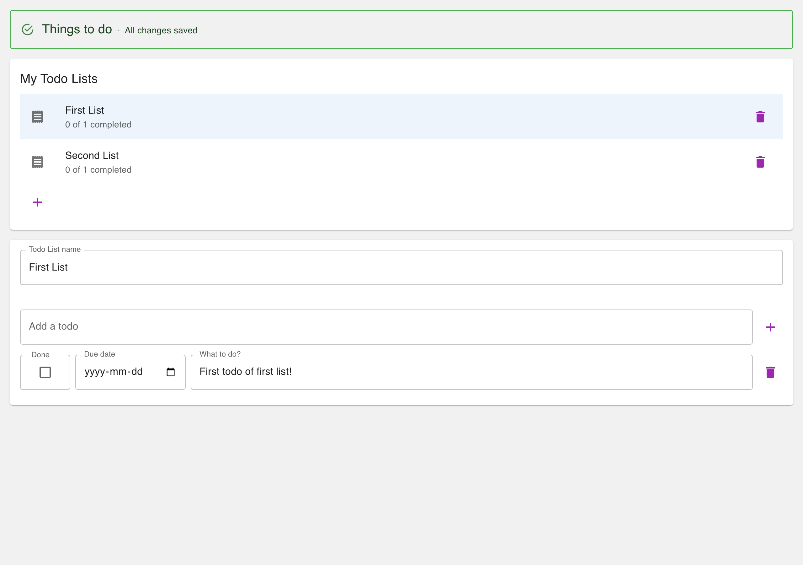
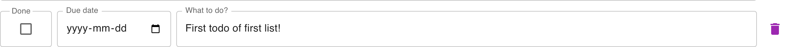
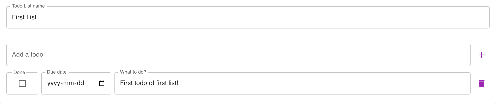

Design system · decision brief
The app is MUI v5 with an empty theme. Every visual decision currently lives as a literal at a call site. This proposes moving those decisions into the theme, documenting them in the Storybook we already pay for, and enforcing them with the lint gate we already trust.

Theme
theme.js sets palette.mode and nothing else. There are no tokens -
no spacing scale, no type scale, no brand colour, no component defaults.
Storybook
Autodocs on every story, addon-themes for light/dark, and
addon-a11y at test: 'error'. Accessibility is already a build gate.
Call sites
Widths, heights, gaps and opacities hard-coded across 9 component files, in three different unit vocabularies.
darkTheme is exported from theme.js and wired into Storybook's theme
switcher, so it is reviewable in isolation. But index.jsx renders
<ThemeProvider theme={lightTheme}> unconditionally. No user can reach dark mode.
This is the failure mode a design system is supposed to prevent: a documented state that the product does not actually have. Today Storybook describes an app that does not exist.
Components style themselves through sx (theme-aware, resolves
spacing units and palette paths) and through raw style
(a plain DOM attribute that knows nothing about the theme). TodoRow,
TodoEditor, the TodoLists card and App's margin all use the
raw channel.
Anything set through style can never respond to a token change. Until those move,
a theme is only partially in charge - which is the whole reason Option A alone would not hold.
A todo row is a completion box, a due-date field, a text field and a delete button. Each width
is declared in a different file, and the completion box hard-codes
height: '56px' purely to match the height MUI happens to give an outlined input at
default density.

5rem
Due date · 176px · DueIn.jsx 11rem
What to do? · flex · TodoItem.jsx minWidth 12rem
height 56px · CompletionField.jsx, literal
The alignment currently holds by coincidence. Change MUI's density, switch a field to
size="small", or bump the type scale, and the completion box stays 56px tall while
everything beside it moves.
x=32; the todo row's text field starts at
x=304. Two text inputs in the same card, on different columns. This is a design
question rather than a bug - see the open questions at the end.
The full inventory. "Token" names the binding proposed below; "keep" means the value is structural and the semantic-constants decision tree already exempts it.
| Value | Where | What it actually means | Token |
|---|---|---|---|
| '56px' | CompletionField | MUI's outlined-input height at default density | control.height |
| '5rem' | CompletionField | Width of the completion column | field.completion |
| '11rem' | DueIn | Width that fits a native date input plus its picker | field.dueDate |
| '12rem' | TodoItem, TodoComposer | Minimum readable width before the row wraps | field.textMin |
| '80rem' | App ×2 | Maximum comfortable reading measure for the page | layout.maxWidth |
| '0 1rem 1rem' | App, TodoListForm | Page gutter, in a unit the theme cannot see | layout.gutter |
| 7 | TodoLists | Clearance so text never runs under the delete button | listRow.actionClearance |
| 0.45 | StatusBar | De-emphasis of the decorative separator dot | emphasis.muted |
| '8px' / '16px' | TodoRow | Row gaps, written in px instead of spacing units | theme.spacing(1) / (2) |
| 0.23 | CompletionField | MUI's own outlined-border alpha, copied by hand | derive from palette |
| '4px' | CompletionField | Label notch padding over the border | keep - structural |
| '2px' | CompletionField | Focused border width, mirrors MUI's focused outline | derive from MUI |
One todos namespace on the theme, so tokens are reachable from any
sx callback as theme.todos.* without colliding with MUI's own keys.
Each literal becomes a named const first - the semantic-constants standard applied
to geometry rather than to durations.
CONTROL_HEIGHT is not ours - it is a number MUI produces, which we mirror so a
non-input control can sit on the same baseline. Mirrored contracts drift silently, so it gets a
Storybook interaction test that measures a real TextField and fails if the two ever
disagree. That converts a coincidence into a gate.
CONTROL_HEIGHT is written as 3.5rem rather than the current
56px. Identical at the default root font size, but it now scales with a user's
browser font setting like every other token here. If you would rather keep step 3 strictly
pixel-preserving, say so and it stays 56px.
createTheme merges unknown keys straight onto the theme, so the namespace needs no
MUI cooperation at runtime. It does need a JSDoc declare module augmentation for
Theme and ThemeOptions so theme.todos.* survives
npm run verify typecheck - that augmentation is part of step 1.
Five increments, each independently shippable and each ending on a green
npm run verify. No increment changes rendered output except where noted.
Add the todos namespace and the named constants to theme.js, with
the JSDoc module augmentation so theme.todos.* typechecks. Purely additive.
style channel
Convert TodoRow, TodoEditor, App's margin and the
TodoLists card from style to sx. Pixel-identical
output; the difference is that these values become reachable by the theme.
Replace each inventoried literal with its token. Add the control-height guard story. Storybook
is the proof: every component already has stories, and the a11y gate stays at
error throughout.
An MDX section rendering palette, type scale, spacing ramp and the todos tokens
by reading the theme object - never by transcribing values. Docs that cannot drift, because
there is nothing to keep in sync.
docs/semantic-constants.md step 4 currently exempts "style geometry". Narrow it
to genuinely structural values, and extend the ESLint rule so a raw dimension in
sx is an error - the same treatment magic durations already get.
'13rem'. Without it this is documentation, and documentation loses.
Distinguishing "geometry that should be a token" from "structural CSS" is a judgement call,
and a rule that flags flexGrow: 1 will get itself disabled. Mitigation: the rule
targets dimension-valued properties only (width, height,
minWidth, maxWidth, padding*, margin*,
gap), and lands last, after the codebase is already clean.
coverage-baseline.json records exact per-file tuples and only ratchets up.
Moving code between files shifts those tuples. Mitigation: run
npm run coverage:ratchet per increment rather than at the end, so a drop is
attributable to one small change.
Every component has stories and the browser suite runs them. Steps 1-3 are value-preserving by construction: each token is initialised to the literal it replaces.
Concentrating decisions in theme.js makes an upgrade smaller, not larger. It also
leaves Option C - our own component layer - available without needing it now.
Both are genuine design decisions rather than implementation details, and both change what step 3 does. Pick an answer and queue it; everything else is settled.
Question 1
Right now darkTheme exists and is reviewed in Storybook but no user can see it.
Either it becomes real, or Storybook should stop implying it exists.
Question 2
Today both use TodoRow, but the composer has two children and a todo row has four,
so their text fields land on different columns - x=32 against x=304.

Annotate anything above directly - a token name, a step, a risk - and send it back with the queued answers.